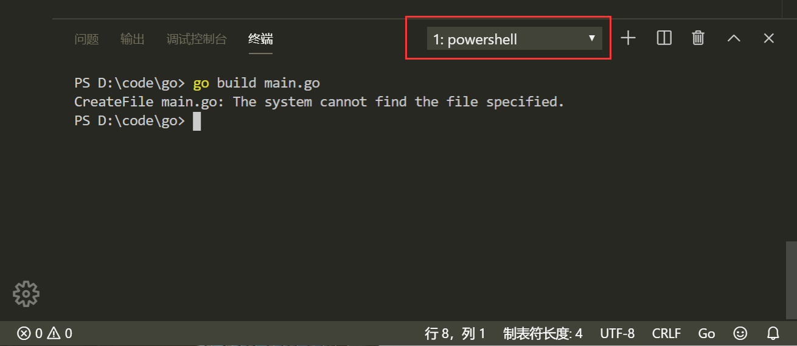
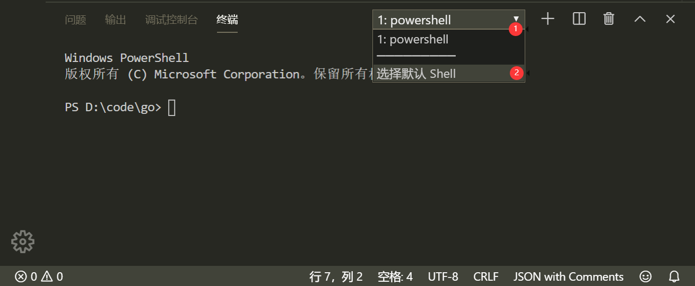
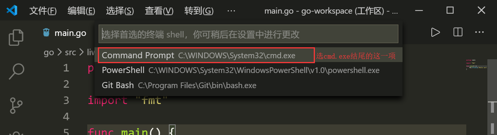
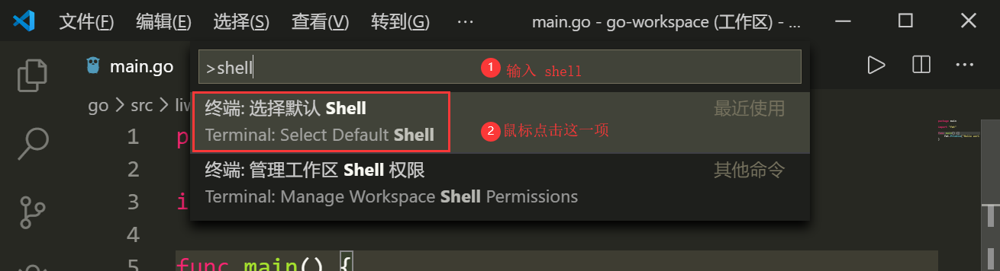

Go语言的安装与配置，以及常见问题。
下载
国内的Go官方镜像站：https://golang.google.cn/dl/ （推荐）
Go官网下载地址：https://golang.org/dl/ （可能会出现访问不了的情况）
Windows平台和Mac平台推荐下载可执行文件版（就是带有安装过程的安装包），Linux平台下载压缩文件版。
安装
Windows
Go提供的安装包安装过程很简单，下载64位的msi安装包后，双击运行，只有安装路径可供选择，没有任何其它选项，设置好路径后便可以一直“下一步”完成安装。
Linux
TODO
Mac
下载可执行文件版，直接点击下一步安装即可，默认会将go安装到/usr/local/go目录下。
检查安装情况
安装过程执行完毕后，可以打开终端窗口，输入go version命令，如果显示了Go的版本信息，则说明安装成功。
配置环境变量
这里我的Go语言安装路径为D:\Go\，另外计划把工作路径放在D:\WorkSpace\Go\下。下面以这两个路径为例进行配置。
GOROOT和GOPATH都是环境变量，其中GOROOT是我们安装go开发包的路径，GOPATH是工作路径（放置代码的地方）。
下面内容只在windows下部署过，其它系统未试，但理论上应该是差不多的。
- 在
用户环境变量中配置GOPATH，值为工作路径，我的是D:\WorkSpace\Go\。 - 在
用户环境变量中的Path添加一行，值为工作路径下的bin目录，我的是D:\WorkSpace\Go\bin。 - 在
系统环境变量中配置GOROOT为Go语言安装路径，我的是D:\Go\。 - 在
系统环境变量中的Path添加一行，值为Go语言安装路径下的bin目录，我的是D:\Go\bin。
上面变量如果不存在，则自行创建；如果存在，则更改路径即可。
Windows需要重启生效。
Go开发编辑器
Go采用的是UTF-8编码的文本文件存放源代码，理论上使用任何一款文本编辑器都可以做Go语言开发，推荐的有VS Code和Goland。VS Code是微软开源的编辑器，而Goland是jetbrains出品的付费IDE。
补充说明：由于VS Code对go mod模式的支持暂时还不够完善，建议大家使用Goland编辑器。
Goland是IDE，VS Code是编辑器。
Goland
由于是付费软件，网上有很多教程，这里就不提供了。
VS Code
安装比较简单，去官网下载对应系统和版本即可。
下面说说插件安装


现在我们要为我们的VS Code编辑器安装Go扩展插件，让它支持Go语言开发。点击上图中的“管理扩展”按钮。

点击“管理扩展”按钮后搜索“Go”，出来的第一个插件（上图）选择安装即可。
后面我们在第一次写Go代码时，VS Code会在右下角弹出提示，自动推荐很多Go插件，选择全部安装即可（Install all）。
- Windows下VSCode切换cmd.exe作为默认终端
如果你打开VS Code的终端界面出现如下图场景（注意观察红框圈中部分），那么你的VS Code此时正使用powershell作为默认终端：

建议改为cmd.exe作为默认的终端工具：

此时，VS Code正上方中间位置会弹出如下界面，参照下图挪动鼠标使光标选中后缀为cmd.exe的那一个，然后点击鼠标左键。

最后重启VS Code中已经打开的终端或者直接重启VS Code就可以了。
如果没有出现下拉三角，也没有关系，按下Ctrl+Shift+P，VS Code正上方会出现一个框，你按照下图输入shell，然后点击指定选项即可出现上面的界面了。

Hello World!
为了检查安装成果，现在我们来创建第一个Go项目——hello。我们创建一个hello目录。
通过VS Code在该目录下新建一个名为main.go的文件：
1 | package main // 声明 main 包，表明当前是一个可执行程序 |
然后在VS Code的Terminal中，进入该目录（可以在VS Code中对该目录右键，打开Terminal），然后执行go build命令进行编译。
或者在其他目录执行以下命令：
go build hello。go编译器会去GOPATH的src目录下查找你要编译的hello项目。
编译得到的可执行文件会保存在执行编译命令的当前目录下，如果是windows平台会在当前目录下找到hello.exe可执行文件。
可在终端直接执行该hello.exe文件：
1 | c:\xxxxx\hello>hello.exe |
可以见到输出结果为Hello World!文本。至此Go安装成功！